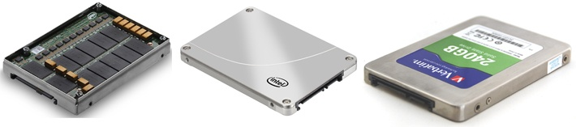
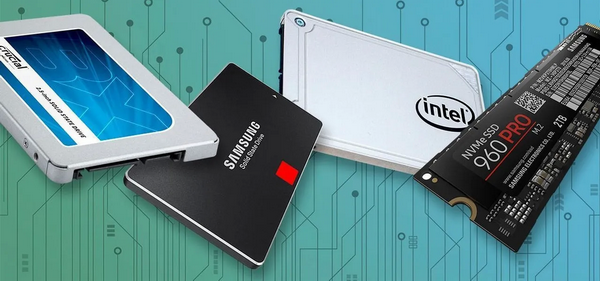

SSD ДИСКИ: ПЕРЕВАГИ ТА НЕДОЛІКИ
За останні роки популярність твердотільних дисків SSD (solid-state drive) тільки зростає,
ціна на них постійно падає. В деяких випадках SSD вже повністю замінюють механічні HDD.
Переважно, навіть самі повільні з них читають та записують дані в рази швидше, ніж звичайні жорсткі диски.
Відбувається повільніше тільки процес видалення файлів.
Накопичувачі SSD складаються з контролера та мікросхем пам'яті, при цьому накопичувач не містить рухомих частин, на відміну від класичних вінчестерів.
Накопичувачі SSD складаються з контролера та мікросхем пам'яті, при цьому накопичувач не містить рухомих частин, на відміну від класичних вінчестерів.
Так як ціна на SSD стрімко падає, то достатньо швидко вони отримали широке застосування в настільних комп'ютерах та ноутбуках, і в найближчі роки витіснять класичні жорсткі диски HDD взагалі.
Останні дослідження показують, що ресурс роботи SSD від 12 до 50 років.
При таких результатах Ви скоріше купите новий диск з більшою ємністю, ніж дочекаєтеся, поки SSD зламається, так як на старому банально не буде вистачати місця
Переваги SSD
- Безшумність і механічна стійкість.
- відсутні рухомі частини
- Мале Споживання енергії.
- Низьке виділення тепла.
- Високі швидкості читання / запису.
- показники перевищують показники HDD з інтерфейсами SATA II і III
- Малі габарити і вага: масивний корпус для захисту від зовнішніх випромінювань не потрібен.
Недоліки SSD
- висока вартість
- слабо захищені від стрибків напруги в мережі
- раптове відключення електроспоживання
- магнітні поля
- статична електрика
Висновок
SSD диски - досить цікава штука на сьогодні.
Використовуючи невеликий за розміром SSD (240 - 500 Гб) для завантаження системи та програмного забезпечення в парі,наприклад, з вінчестером 1000Гб - 4000ГБ і більше (сховище для частого запису/перезапису/стирання інформації ), можна досягти досить великого приросту в швидкодії.